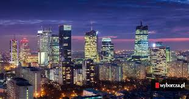

Warszawa
Rzym :::: Manchester
stolica Polski i województwa mazowieckiego, najludniejsze miasto w kraju i drugie (po Gdańsku) pod względem powierzchni, położone w jego centralnej części, na Nizinie Środkowomazowieckiej, na Mazowszu, nad Wisłą. Jest jedynym polskim miastem, którego ustrój jest określony odrębną ustawą. Od 2002 jest gminą miejską mającą status miasta na prawach powiatu. W jej skład wchodzi 18 jednostek pomocniczych – dzielnic m.st. Warszawy. Warszawa uzyskała prawa miejskie przed 1300. W 1526 została włączona do Korony Królestwa Polskiego[11]. W 1569 mocą unii lubelskiej została ustanowiona miejscem obrad sejmów Rzeczypospolitej Obojga Narodów[a]. Od 1573 odbywały się tam wolne elekcje. Po 1596 do Warszawy przeniesiono dwór królewski i urzędy centralne, a w 1611 w rozbudowanym Zamku Królewskim na stałe zamieszkał król Zygmunt III Waza. Miejsce obrad sejmików generalnych województwa mazowieckiego i sejmików ziemskich ziemi warszawskiej od XVI wieku do pierwszej połowy XVIII wieku. Po rozbiorach Polski przejściowo w Królestwie Prus, a następnie stolica Księstwa Warszawskiego i Królestwa Polskiego; od odzyskania niepodległości przez Polskę w 1918 roku – jej stolica. Doznała znacznych zniszczeń podczas II wojny światowej, kiedy to najpierw była bombardowana przez armię niemiecką we wrześniu 1939, stała się areną walk powstańczych (w 1943 w getcie, a w 1944 podczas powstania warszawskiego), a po zakończeniu walk była metodycznie palona i wyburzana przez Niemców. Odbudowane po wojnie Stare Miasto w 1980 zostało wpisane na listę światowego dziedzictwa UNESCO.
Pałac Kultury i Nauki

drugi pod względem wysokości całkowitej budynek w Polsce. Znajduje się w warszawskiej dzielnicy Śródmieście, przy placu Defilad 1. Właścicielem gmachu jest miasto stołeczne Warszawa, zarządza nim miejska spółka Zarząd Pałacu Kultury i Nauki Sp. z o.o. Pałac jest siedzibą Rady m.st. Warszawy, która obraduje w Sali Warszawskiej. W 2007 budynek został wpisany do rejestru zabytków. Pałac stanowił „dar narodu radzieckiego dla narodu polskiego”. Wybudowany został w latach 1952–1955 według projektu radzieckiego architekta Lwa Rudniewa, który inspirował się moskiewskimi drapaczami chmur (znanymi poza Rosją jako Siedem Sióstr), wzorowanymi na amerykańskich wieżowcach w stylu art déco. Architektonicznie jest mieszanką realizmu socjalistycznego i historyzmu. Razem ze wspornikiem antenowym, będącym integralną częścią iglicy, ma wysokość 237 metrów. Pałac jest siedzibą wielu przedsiębiorstw i instytucji użyteczności publicznej, w tym czterech teatrów (Studio, Dramatyczny, Lalka, 6. piętro), dwóch muzeów (Narodowego Muzeum Techniki i Muzeum Ewolucji PAN), kina „Kinoteka”, Uniwersytetu Civitas, władz Polskiej Akademii Nauk oraz Rady Doskonałości Naukowej. Organizowane są tam także różnego typu wystawy i targi – od 1958 przez wiele lat odbywały się tam Międzynarodowe Targi Książki i towarzyszące im kiermasze, a także przez kilka lat (na przełomie XX i XXI wieku) targi Komputer Expo. Mieszczą się w nim sala konferencyjno-widowiskowa na 3000 osób (Sala Kongresowa, nieczynna od 2014) oraz Pałac Młodzieży z basenem.